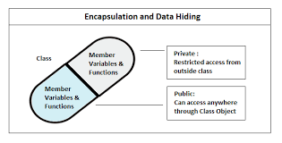
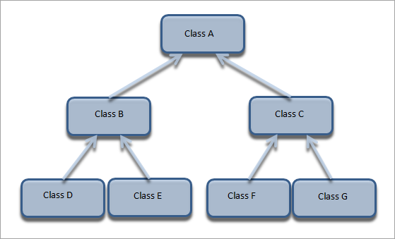
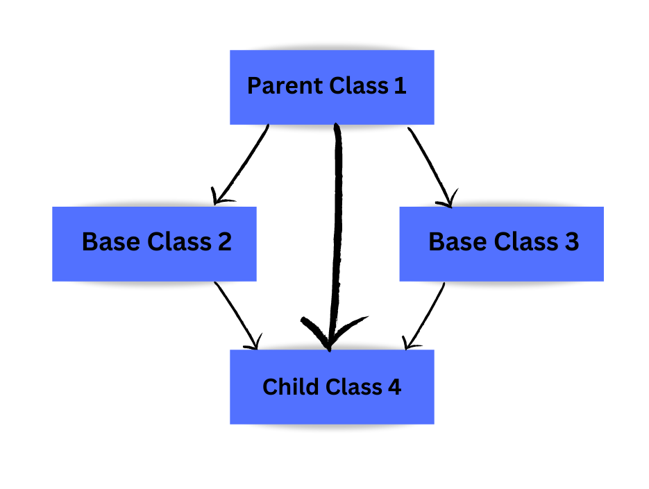
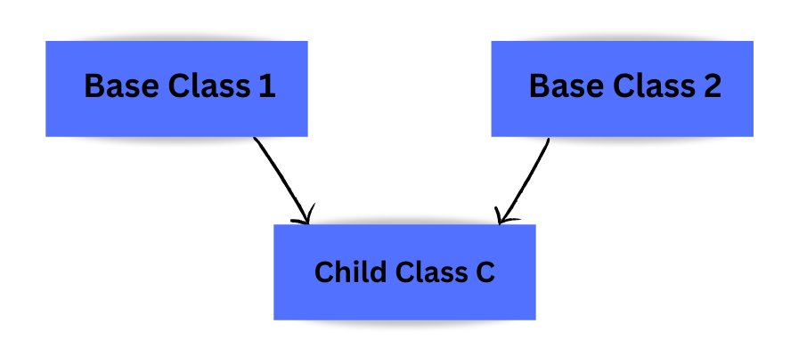
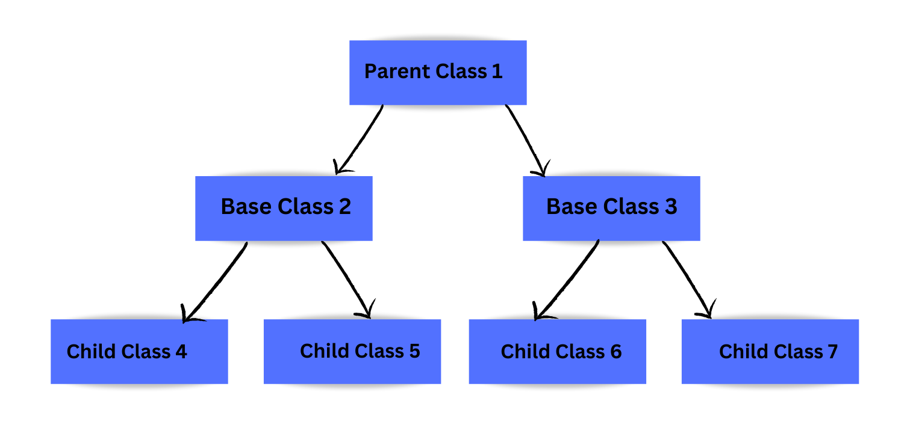

Pillars of OOPs
Encapsulation-
- Encapsulation refers to bundling data and the methods that operate on that data into a single unit.
- Many programming languages use encapsulation frequently in the form of classes.
- A class is an example of encapsulation in computer science in that it consists of data and methods that have been bundled into a single unit.
- Encapsulation may also refer to a mechanism of restricting the direct access to some components of an object, such that users cannot access state values for all of the variables of a particular object.
- Encapsulation can be used to hide both data members and data functions or methods associated with an instantiated class or object.
- In other words: Encapsulation is about wrapping data and methods into a single class and protecting it from outside intervention.
- The general idea of this mechanism is simple. For example, you have an attribute that is not visible from the outside of an object.
- You bundle it with methods that provide read or wote access.
- Encapsulation allows you to hide specific information and control access to the objects internal state.

To understand more clearly all the concept go through the code :->
CodeAbstraction-
- Abstraction means providing only some of the information to the user by hiding its internal implementation details. We just need to know about the methods of the objects that we need to call and the input parameters needed to trigger a specific operation, excluding the details of implementation and type of action performed to get the result.
- Abstraction is selecting data from a larger pool to show only relevant details of the object to the user.
- It helps in reducing programming complexity and efforts. It is one of the most important concepts of OOPs.
- Real-life example: When you send an email to someone, you just click send, and you get the success message; what happens when you click send, how data is transmitted over the network to the recipient is hidden from you (because it is irrelevant to you).
- We can implement Abstraction in C++ using classes.
- The class helps us to group data members and member functions using available access specifiers.
- A Class can decide which data members will be visible to the outside world and not.
- Access specifiers are the main pillar of implementing abstraction in C++.
- We can use access specifiers to enforce restrictions on class members.
- Only you can make changes to your data or function, and no one else can .
- It makes the application secure by not allowing anyone else to see the background details.
- Increases the reusability of the code.
- Avoids duplication of your code.
To understand more clearly all the concept go through the code :->
CodeInheritance-
- inheritance is one of the key features of Object-oriented programming in C++, it allows us to create a new class (derived class) from an existing class (base class)
- The derived class inherits the features from the base class and can have additional features of its own Inheritance allows us to define a class in terms of another class, which makes it easier to create and maintain an application.
- This also provides an opportunity to reuse the code functionality and fast implementation time.
- When creating a class, instead of writing completely new data members and member functions, the programmer can designate that the new class should inherit the members of an existing class. This existing class is called the base class, and the new class is referred to as the derived class.
- Technically, inheritance is defined as the process of acquiring the features and behaviors of a class by another class. Here, the class that contains these members is called the base class, and the class that inherits these members from the base class is called the derived class of that base class

Mode of Inheritance
- Public mode: If we derive a subclass from a public base class. Then, the base class public members will become public in the derived class, and protected class members will become protected in the derived class.
- Protected mode. If we derive a subcass from a Protected base class. Then both public members and protected members of the base class will become protected in the derived class .
- Private mode: If we derive a subclass from a Private base class. Then both put members and protected members of the base class will become Private in the derived class.
Types of Inheritance
C supports five types of inheritance they are as follows:
- Single Inheritance : In single inheritance, one class can extend the functionality of another class. There is only one parent class and one child class in single inheritances.
- Multilevel Inheritance: When a class inherits from a derived class, and the derived class becomes the base class of the new class, it is called multilevel inheritance. In multilevel inheritance, there is more than one level.
- Multiple Inheritance: Multiple Inheritance In multiple inheritance, a class can inherit more than one class. This means that a single child class can have multiple parent classes in this type of inheritance.
- Hierarchical Inheritance Hierarchical inheritance in hierarchical inheritance, one class is a base class for more than one derived class.
- Hybrid Inheritance Hybrid inheritance is a combination of more than one type of inheritance. For example. A child and parent class relationship that follows mul and hierarchical inter stances can be called hybrid inheritance 




To understand more clearly all the concept go through the code :->
CodePolymorphism
- Polymorphism is considered one of the important features of Object Oriented Programming, Polymorphism is a concept that allows you to perform a single action in different ways. Polymorphism is the combination of two Greek words. The poly means many, and morphs means forms. So polymorphism means many forms. Let's understand polymorphism with a real-life example.
- Real-life example: A person at the same time can have different characteristics. Like a man at the same time is a father, a husband, and an employee.
- So the same person possesses different behavior in different situations. This is called polymorphism,
There are two types of polymorphism in C++
Compile time Polymorphism
Compile-time polymorphism is also known as static polymorphism. This type of polymorphum can be achieved through function overloading or operator overloding.
- Function overloading:
When there are multiple functions in a class with the same name but different parameters, these functions are overloaded. The main advantage of function overloading is that it increases the program's readability. Functions can be overloaded by using different numbers of arguments or by using different types of arguments. We have already discussed function overloading in detail in the previous module - Operator Overloading:
C++ also provides options to overload operators. For example, we can make the operator for the string class to concatenate two strings. We know that this is the addition operator whose task is to add two operands. When placed between integer operands, a single operator, adds them and concatenates them when placed between string operands
Points to remember while overloading an operator:
- it can be used only for user-defined operatorstobjects, structures but cannot be aded for in-built operators(int, char, float, etc).
- Operators and & are already overloaded in Ce to avoid overloading them.
- The precedence and associativity of operators remain intact.
Runtime polymorphism:
Runtime polymorphism is also known as dynamic polymorphism Method overriding is a y to implement runtime polymorphism
Method overriding
Method overriding is a feature that allows you to redefine the parent class method in the child class based on its requirement. In other words, whatever methods the parent class has by default are available in the child class. But, sometimes, a child class may not be satisfied with parent class method implementation. The child class is allowed to redefine that method based on its requirement. This process is called method overriding
Rules for method overriding
- The parent class method and the method of the child class must have the same name
- The parent class method and the method of the child class must have the same parameters
- It is possible through inheritance only.
Virtual Function
A virtual function is a member function in the base class that we except to redefine in derived
classes. It is declared using the virtual keyword.
A virtual function is used in the base class to ensure that the function is overridden. This
especially applies to cases where a pointer of base class points to a derived class object.
C++ determine which function is invoked at the runtime based on the type of object pointed by the
base class pointer when the function is made virtual.
Pure Virtual Function:
A pure virtual function is a virtual function in C++ for which we need not write any function
definition and have to declare it. It is declared by assigning 0 in the declaration.
A pure virtual function in C++ is a virtual function we implement , But we must override that
function in the derived class otherwise, the derived class will also become an abstract
class.
To understand more clearly all the concept go through the code :->
CodePlease go through this video it is going to be very helpful: